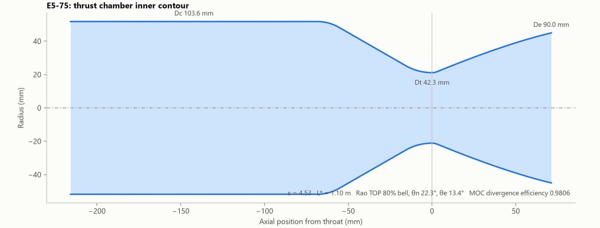

Propulsion · Python
Liquid Rocket Engine Preliminary Design Tool
Turns thrust, chamber pressure and propellants into a complete preliminary thrust-chamber design. Used to design the E5-75, a 5 kN (1,124 lbf) LOX / 75% ethanol regen-cooled engine at 25 bar.
- Equilibrium combustion (Cantera); ideal Isp within 0.6% of Sutton & Biblarz
- Cooling trade study cut the hot wall from 1,124 K to 758 K, under the CuCrZr limit
- Method-of-characteristics nozzle solver, validated within 0.03° of exact theory